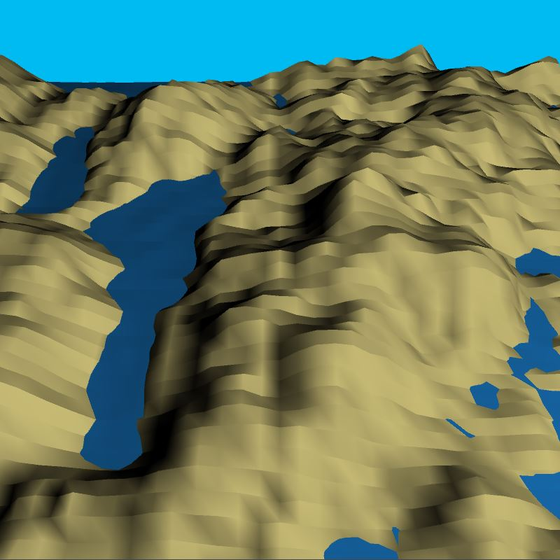
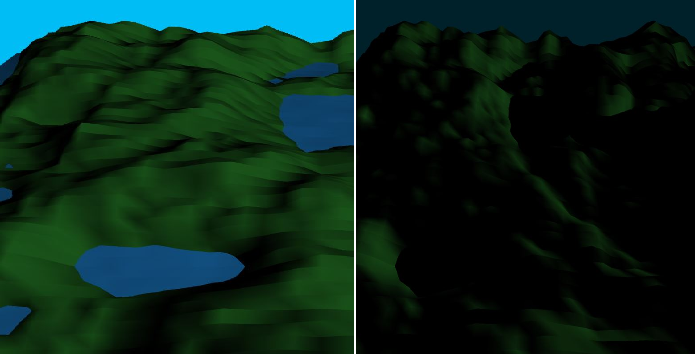

Processing: 3D Terrain Generator
My first programming project, concluding the 2 week Programming Bootcamp at City (2020). It is in the 3D Graphics theme. This Processing project demonstrates a comprehensive understanding of the use of loops, arrays, randomization and working with 3D graphics. I created a randomized 3D terrain generator.
This generator creates new landscapes using the coordinates of vertices which make up 2D strips of triangles which form a gridlike 2D surface. By rotating this surface and modifiying the Z positions of the vertices I was able to raise and lower certain points to give the effect of hilly or mountainous terrain. In order to avoid gaps between the strips, I stored these coordinates in a 2D array so that it would be easier to pair neighboring strips with a shared side of coordinates.
I simulated a day-night cycle by playing with lighting methods, more specifically directionalLight() which allowed me to control the position and hue of the light. Using a sin wave calculation I was able to get the light to smoothly bob above and below the surface of the planes which increased and decreased the light level. This also meant that I wouldn't have to keep the polygon outlines visible as the shadows created by the light showed depth.
Overall, I learnt a lot about working with 3D graphics and Processing. This was the first programming project where I created and used Class objects. I've wanted to create a terrain generator to quite a while now and had done some research on them for my IB Maths internal assessment last year.
Check out the code on Github here.